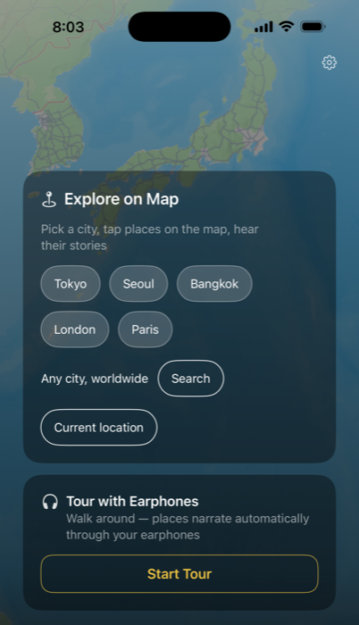

AI Audio City Guide
Every Place


Every Place
Has a Story.
CityYoYo gives you two ways to explore a city on foot — tap any place on the map for its story, or put on your headphones and just walk while Tour Mode narrates hands-free.
Free · iOS & Android · English, 中文, 한국어, Español, Português, Français
